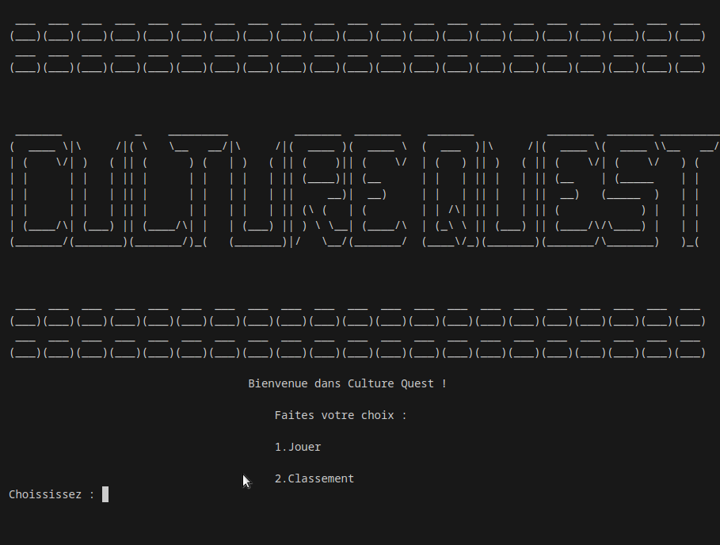
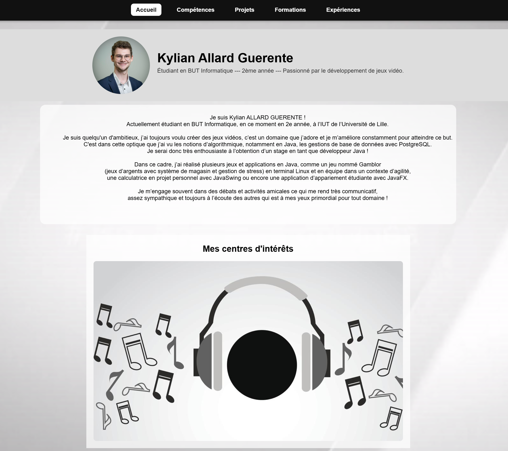
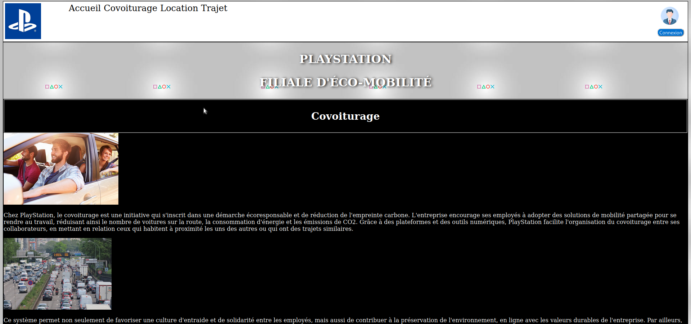

Objectifs du projet
Créer un RPG tour par tour immersif, structurer un gameplay éducatif et proposer une expérience motivante pour apprendre.
Illustrations

Compétences techniques
- Programmation en IJava
- Algorithmie pour IA de combat
- Architecture modulaire et gestion de fichiers
- Conception d'interface utilisateur pour jeu éducatif
- Tests fonctionnels et débogage de mécanique
Compétences transversales
- Communication et coordination d'équipe
- Patience, rigueur et test continu
- Capacité à expliquer une mécanique complexe
- Priorisation des actions en phase de développement
- Réception et intégration des retours
Objectifs du projet
Proposer des labyrinthes variés, un système de progression et une expérience de jeu claire pour l'utilisateur.
Illustrations
Compétences techniques
- Maîtrise des graphes et algorithmes de labyrinthe
- Programmation Java et gestion de comptes utilisateur
- Conception d'IHM pour exploration et découverte
- Génération procédurale et équilibrage de difficulté
- Validation de stabilité et tests de parcours
Compétences transversales
- Travail organisé et documentation
- Communication avec l'équipe sur les choix de conception
- Adaptation du gameplay aux besoins utilisateurs
- Analyse des retours et amélioration continue
- Gestion du temps et respect des jalons
Objectifs du projet
Créer une application capable de rapprocher des profils selon des critères définis et de proposer un appariement optimal.
Illustrations
Compétences techniques
- Algorithmes de graphe et appariement
- Java et JavaFX
- Conception de calculs d'affinité
- Modélisation de données utilisateur
- Tests de robustesse et validation métier
Compétences transversales
- Respect du cahier des charges
- Capacité à intégrer des retours
- Communication sur les choix techniques
- Collaboration et alignement avec l'équipe
- Présentation de résultats fonctionnels
Objectifs du projet
Simuler les décisions d'un joueur de casino, équilibrer le risque et proposer un chemin de progression.
Illustrations
Compétences techniques
- Programmation Java
- Gestion de règles de jeu et logique métier
- Design d'expérience utilisateur
- Équilibrage de mécaniques et tests de jeu
- Intégration de ressources graphiques
Compétences transversales
- Prise d'initiative
- Analyse des retours pour améliorer le gameplay
- Organisation et gestion du temps
- Résolution de problèmes techniques
- Esprit d'innovation ludique
Objectifs du projet
Créer une page efficace, lisible et moderne pour valoriser le profil et faciliter l'accès aux informations.
Illustrations

Compétences techniques
- HTML et CSS
- Responsive design
- Structuration de contenu
- Mise en forme typographique
- Intégration d'une navigation fluide
Compétences transversales
- Direction artistique
- Autonomie complète
- Sens de la présentation
- Clarté dans la rédaction
- Adaptabilité au web responsive
Objectifs du projet
Présenter un service de mobilité durable tout en simplifiant l'accès aux fonctionnalités clés.
Illustrations

Compétences techniques
- HTML/CSS
- Design de page et hiérarchie visuelle
- Structuration de l'information
- Maquette d'interface orientée utilisateur
- Cohérence graphique et navigation
Compétences transversales
- Direction artistique
- Esprit de synthèse
- Organisation de l'information
- Sens du détail visuel
- Traduction d'un concept en page web
Objectifs du projet
Construire une plateforme de présentation lisible et attractive pour des contenus manga traduits.
Illustrations
Compétences techniques
- HTML/CSS
- Structuration de contenu
- Gestion de projet personnel
- Design web accessible
- Mise en page adaptée au contenu
Compétences transversales
- Autonomie
- Curiosité
- Gestion du temps
- Organisation
- Priorisation de la lisibilité
Objectifs du projet
Apprendre Unity, créer un jeu simple et tester des mécaniques de stratégie.
Illustrations
Compétences techniques
- C#
- Unity
- Conception de gameplay
- Prototypage de mécaniques interactives
- Management de scènes et assets
Compétences transversales
- Autonomie
- Curiosité technique
- Apprentissage par expérimentation
- Résolution de problèmes en temps réel
- Gestion de versions de projet
Objectifs du projet
Construire une application simple mais complète pour pratiquer les interfaces Swing.
Illustrations
Compétences techniques
- Java
- Swing
- Gestion d'interfaces graphiques
- Validation d'opérations et gestion d'erreurs
- Conception de fenêtres fonctionnelles
Compétences transversales
- Autonomie
- Rigueur
- Organisation
- Test systématique des flux
- Attention aux détails d'interface
Objectifs du projet
Apprendre Lua, créer un jeu simple et publier un univers interactif pour jouer.
Illustrations
Compétences techniques
- Lua
- Développement de jeu
- Création d'environnements interactifs
- Programmation d'événements et de mécaniques
- Optimisation simple de scripts
Compétences transversales
- Curiosité
- Apprentissage autonome
- Créativité
- Persévérance dans l'expérimentation
- Adaptation aux contraintes de plateforme